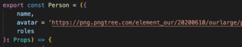

Startar Projeto React:
- NEXT : npx create-next-app
- Update Next : npm install -g create-next-app
- VITE : npm create vite
Componentes:
Componentes são partes do seu aplicativo que irão exibir trechos de códigos JSX. Em resumo dentro de um app temos diversos Componentes juntos construindo a interface. Todo componente que criamos precisamos Exporta-los. Por padrão colocamos todos os componentes iniciando com letra maiúscula. Exemplo de um componente:

Passando & Recebendo Props
Podemos enviar informacoes para dentro de um componente através das Props. Por exemplo, criamos um componente de um card, onde irá exibir o nome, foto e data. Para podermos reaproveitar esse card em diversas ocasioes, enviamos os dados a ser exibido via props. Assim em cada local que quisermos exibir ele exibirá os dados das Props.
Além de Enviarmos as props, também precisamos recebe-las e também criar os seus types dentro do componente para que tudo ocarra perfeitamente. Exemplo Abaixo:
Enviando Props:
Recebendo Props:
Encurtando Props:

Definindo valor Padrão Props:
(Caso não seja enviada via props, terá um valor pré setado)
Childrens
É o que permite que o componente receba outros conteúdos dentro dele mesmo. Sem ser via Props.
Utilizando Childrens:

Recebendo Childrens:
Renderização Condicional
Muito utilizada quando queremos renderizar algo de acordo com uma condicao. Por exemplo abaixo: Temos uma props Autor que é opcional. Caso ela seja enviada, renderize ela, caso não seja enviada, renderize "Autor Desconhecido:. Exemplo:
Eventos Click
Eventos podem ser acionados em React muito parecido como em JS.
onClick = {handleClick}
Recebendo Evento de Click via Props
Constantemente iremos passar funcoes para dentro de componentes Buttons por exemplo. Para isso, precisamos recebe-las dentro do seu type.
Prevent Default
Sempre que trabalharmos com formulários ele terá por natureza a funcao de ao ser enviado atualizar a página por completo, que é uma coisa que não queremos quando estamos trabalhando com react. Então em 99% dos casos iremos precisar 'cancelar' esse comportamento padrão, para que nós mesmos direcionemos o fluxo do formulário. Exemplo abaixo:
States
É literalmente um estado. Que armazena informacoes temporárias.
const [count, setCount] = useState
Para conectar um state a um input precisamos dentro do input no value colocar o nome do state.
value={count}
onChange={e => setCount(e.target.value)}
Dessa forma eles ficarão responsíveis e sempre que alguém digitar dentro do input a alteração será executado automáticamente.
Prev Default
O processo de alteração de um state, por mais rápido que seja, funciona de forma assíncrona. Logo, caso disparemos uma sequencia de alteracao em uma state de forma seguida, ele não irá captar caso seja feito da maneira normal:
setCount ( count + 2)
Para que a alteração seja realmente efetiva, precisamos trabalhar com o PREV, pois dessa forma ele irá pegar o valor EXATO da hora que a função for diparada.
setCount( prev => prev + 1)
Arrays em States
Sempre que quisermos renderizar uma lista (Array) em tela no react, utilizaremos a função MAP e sempre lembrar de utilizar a KEY.
Sempre que quisermos adicionar um item a lista, utilizaremos o Spread/Rest operator. De forma allguma podemos utilizar o PUSH. Por exemplo, em uma lista de string, para adicionarmos, utilizaremos:
Sempre que quisermos
setList( [...list, "pera"]).
Sempre que quisermos excluir um item do Array, utilizaremos a função Filter. Que nos permite percorrer todo o array, gerando um novo array, sem o item que queremos. Exemplo:
Sempre que quisermos Alterar um item,
Effects
Funciona como um sideEffect (efeito colateral). Em resumo é um hook do React, que nos permite disparar determinadas funções sempre que o gatilho for apertado. E quando esse gatilho pode ser apertado ? Pode ser apertado sempre que um componente for renderizado, ou sempre que um state for alterado. Exemplo úteis: Ao abrirmos uma página, que precise se comunicar com o servidor para receber as informacoes a serem exibidas. Nesse cenário precisamos de um effect, para que assim que o componente da página seja renderizado, executo a ação. Outro cenário muito utilizado é quando um state for alterado, automaticamente realizar alguma ação.
useEffect(() => {} , [])
Dessa forma, o primeiro parametro colocamos a funcao que será executada assim que o effect for disparado. Em seguida temos um array, onde colocamos todos os states que serão monitorados para disparar o effect. Um effect SEMPRE será disparado quando um componente for construído. O useEffect geralmente é mais utilizado quando precisamos interagir com o ambiente externo do Projeto.
Clean Up
No useEffect definimos a funcao, em seguida os estados a serem monitorados. Dentro de um useffect, também podemos colocar um retorno de uma funcao. Esse retorno será executado sempre que o componente for desmontado. por exemplo:
Reducers
Reducers são basicamente States um pouco mais complexo. São utilizados para states que possuem muitas acoes. Por exemplo. Em uma TO-DO-LIST, voce cria o state da task, e cria funcoes separadas como: adicionarTask, removerTask, etc. Com o Reducer, essas funções ficam todas pré criadas dentro de um Reduce, centralizando o código todo em um só lugar, e informando que toads as funções fazem parte do mesmo state(reducer), ao invés de ficarem soltas pelo componente.
Context
Como o próprio nome já diz, é um contexto, que nos permite armazenar uma série de informacoes importantes ( como os dados de um usuário logado por exemplo, ou seu token). Informações nas quais todos os componentes que estiverem dentro (abraçados) por esse contexto terão acesso de forma rápida e prática. A crianção de contexto é feita em Três etapas. A criação do contexto, Usar o contexto e também a criação do Provider, que é o que engloba o contexto. Esse processo de três etapas pode ser feito tanto em uma única página, como em várias páginas separadas. Vai depender de sistema para sistema.
Criando o Contexto: (1/3)
Criando o Provider: (2/3)

Pegando Informações do Context: (3/3)

No cenário atual, dentro do nosso contexto temos o state do contador. Mas e caso queiramos altera-lo ? No exemplo abaixo, é a forma Real como se trabalha com Context, utilizando States e centralizando o context e o provider em um arquivo.
Context + Provider:

Utulizando o Context:

Provavelmente dentro de providers, muitas vezes precisaremos criar funcoes para serem enviadas ao contexto. Por exemplo adicionar ou remover itens, por ai vai. Ex:

Requisições, Axios
Já aprendemos a fazer requisições no módulo de JS. Dentro do React elas irão funcionar da mesma forma. Geralmente é muito utilizado o hook USEEFFECT para realizar requisições. Aqui nesse módulo vamos aprender sobre uma biblioteca chamada AXIOS, que serve basicamente para simplificar a forma que realizamos requisições. Com o axios conseugimos criar um arquivo de configuracao para centralizar todas as requisicoes em apenas um lugar.
Comando:
npm i axios
Para trabalharmos com o axios de forma eficiente, o primeiro passo é criarmos um arquivo de configuração para ele, onde centralizaremos todas as informacoes principais (baseUrl, métodos), e depois basta exportamos sua instância. Exemplo:
Aqui temos sua instância, e dentro do objeto que ele recebe por parâmetor podemos colocar diversas informações como por exemplo a BASEURL.

Dessa forma, para utilizarmos, basta importarmos nossa instancia API, e utiliza-la.

Styled Components
Styled Components é uma biblioteca que nos permite estilizar e criar designSystem para o nosso sistema de forma fácil. Para instalarmos o styled components precisamos usar o comando:
npm install styled-components
A partir do momento que está instalado, podemos passar a criar nossos estilos. No exemplo a seguir será criado um botao, para isso criamos um arquivo chamado: Button.style.jsx por exemplo. E dentro dele:

Outra coisa que faremos constantemente, é enviar parametros para dentro da estilizacao do styled components. Podemos passar qualquer parametro para lá, e será fortemente utilizado, como por exemplo, em uma TODOLIST podemos enviar um boolean de feito ou não feito. Caso feito, cor verde, caso nao feito, cor vermelha. E por ai vai. No exemplo abaixo, enviaremos via PROPS a cor do background do button e caso tenha sido enviado, será da cor enviado, caso contrário, será da cor pré definida.

Tanstack
TanstackQuery / ReactQuery, É uma biblioteca que age como um intermediário entre a aplicação e a requisição, que pode ser feita tanto com o Fetch quanto com o Axios. Mas para que precisamos de um intermediário se o Axios e o Fetch já fazem tudo que é necessário ? O TanstackQuery nos ajuda com o Fetching, com o cache de um requisicao, sincroniza e também atualizar dados de state em nossa aplicação.
Primeiro passo é instalarmos a biblioteca com o comando:
npm i @tanstack/react-query
Uma das principais funcoes do TanstackQuery, é transportar dados entre diversos componentes da aplicação. Logo, para isso vamos precisar criar um provider. Podemos criar um arquivo chamado Providers e dentro dele colocar Abaixo fica a configuração do Provider + criação do Client:

Em seguida envolvemos o Layout.tsx da aplicacao next pelo nosso provider.

Podemos também instalar uma outro biblioteca, que irá auxiliar no uso do Tanstack. Para isso basta colocarmos o comando:
npm i @tanstack/react-query-devtools .
Podemos colocar o reactDevTools dentro do próprio provider que criamos, assim teremos algumas dessas propriedades em todos os locais da aplicação.

Já tendo todos os passos a cima feitos, podemos começar a utilizar o tanstack. O primeiro passo que iremos ver, é como é realizada uma requisição com método GET de forma simples.

Uma das formas que temos para colocar nossas requisicoes é igual essa acima. Porém, dependendo do tamanho do sistema, fácilmente ele irá escalar e ficar tudo confuso. Para resolver esse processo, costumamos criar um local para unificar. Por exemplo, imagine que estamos trabalhando com a biblioteca Axios e por algum motivo precisemos trocar e utilizar o Fetch. Se estiver tudo solto pela aplicação, o trabalho será gigante, tendo que fiscalizar de arquivo por arquivo. Tendo tudo centraliza-do, já saberemos onde encontrar.
Para isso, criamos uma pasta separada chamada API e dentro dela, criar o arquivo API.TS . Ali dentro iremos exportar as funções da API que iremos utilizar dentro do Tanstack.

Agora que já temos uma API com as requisições criadas, precisamos aprender ou chegar a um consenso em como organizar o nosso código. Dessa forma podemos simplificar a requisicao anterior, por exemplo:

Porém ainda podemos por exemplo separar ainda mais. Por exemplo, em componentes grandes com diversas funções prórpias, pode ficar confuso a leitura, e ficando tudo misturado. Portanto, podemos CASO QUISERMOS, realizar uma outra separação, criando um arquivo chamado por exemplo Querys.ts, onde ficará hospedado todas as querys que irão utilizar o tanstack. Dessa forma fica simplificado dentro do componente que iremos usar, e também todas as querys ficam centralizadas em um único arquivo.
Arquivo único:

Componente utilizando:

Mais funções dentro do arquivo de Post

Resumo do passo a passo:
- 1- Arquivo com Hooks para Montar as queries do Tanstack
- 2- Arquivo com as funções que fazem a requisição.
Entendendo o Query Key:
Precisamos entender ele bem, pois é através dele que iremos organizar nossas querys. O Tanstack query, basicamente faz um processo de Cash da nossa requisição. Por exemplo, fazemos uma query para pegar todos os posts. Se futuramente em outro componentes precisarmos utilizar denovo essa lista, ele terá esses dados salvos durante um tempo X pré determinado. Ou seja, ele enviará os dados já salvos em cash, evitando ter que realizar uma nova requisicao indo até o servidor pegar a resposta, etc.
Para pegar todos os posts, utilizamos a chave ['posts'], porém com o passar do tempo, iremos trabalhar com querys mais robustas. Um exemplo, em uma loja de carro, podemos filtrar por todos os carros. Também podemos exibir um carro em específico. Também podemos procurar só por uma faixa de ano em específico, cores, etc. Cada uma dessas querys ficam salvas pela sua Key. Por exemplo, abaixo:

Entendendo o Query Function:
Mais conhecido como query FN. Básicamente é um parametro que utilizaremos no tansttack que colocaremos a função que irá retornar os dados da query. Porém também podemos utilizar a funcao para retornar dados, nao necessáriamente apenas em requisicoes. Qualqeur função que retorne dados pode ser passado na query function, independente de como seja.
Também precisamos deixar claro que na queryfunction estamos passando uma função para ser executada, e não estamos executando. Outro fator que também é importante de saber, é que a funcao do queryfn pode receber parametros. Exemplo abaixo:

Outra cois que precisamos saber também, é que a query function pode disparar exibir ou receber erros. Por exemplo:

Loading & Fetching
Quando trabalhamos com requisicoes, existem o estado e Loading e também o estado de Fetching, que muita gente acha que são iguais, porém funcionam de forma diferente.
Controlando o StaleTime
Existe um status chamado Stale, que em ingles significa algo do tipo "obsoleto". O tempo por padrão para uma requisição ficar obsoleta no tanstack é de zero. Ou seja, automáticamente assim que recebemos uma requisição no tanstack ela já passa a ser obsoleta. De forma que caso queiramos os dados novos, precisaremos dar um refetch, para realizar uma nova requisição. Porém nesse caso, o simples fato de mudarmos de aba e retornarmos para a próxima, já irá fazer com que precisemos realizar uma nova requisição. Porém obviamente não é isso que buscamos com a biblioteca em 90% dos casos, logo, existem formas que possamos controlar a requisição.
Como cada requisição terá sua particularidade, precisamos trabalhar com isso dentro de cada requisição. Que no nosso caso, é o arquivo queries.ts. Além do queryKey, queryFn, também podemos trabalhar com o staleTime: miliseconds. Também podemos colocar o valor infinity caso queiramos que sempre que a tela permaneça aberta os dados nunca fiquem obsoletos.
Exemplo:

Configurações padrão no QueryClient
Vimos no exemplo acima que podemos configurar o staleTime de cada query. Porém também existe uma opção que possamos para que possamos configurar o padrão geral de todas as querys, comor deixar por padrão o staletime infinity por exemplo. Para isso vamos dentro do nosso provider criado e dentro do nosso queryClient colocamos essas informações. Como primeiro passo, podemos criar o queryClient em um arquivo separado ao invés de no mesmo lugar, e em seguida configurar:

Query sob Demandas:
Até o atual momento, as querys estão sendo executadas sempre que uma página for aberta. Porém em diversos momentos, iremos querer executa-las apenas quando algum gatilho for desparado, como um botão sendo apertado por exemplo. Para isso, existe uma propriedade dentro da query que podemos ativar ou desativar. Essa prorpiedade se chama enabled que por padrão vem como true, ou seja, se abrimos a página ela já começa a ser executada. Quando setarmos o enabled para false, ela estará preparada e apenas esperando o gatilho ser ativado.
Fazendo Paginação
Na maioria dos sistemas precisaremos trabalhar com paginação. Supomos que tenhamos uma lista com 100 posts, como a do jsonplaceholder por exemplo, se a cada requisicao retornar os 100 posts, a requisicao tende a demorar. Imagina se o google retornasse todos os resultados de uma pesquisa de uma vez? cada requisicao demoraria mais de 15 minutos para acontecer. Logo, trabalhamos com paginação. Para isso podemos usar algumas querys de filtro, como por exemplo: _limit=10 que irá retornar apenas 10 itens da lista. E também podemos colocar outro que é _start=10 que dessa forma ele irá retornar a partir do décimo item. Logo, com esses dois parametros, podemos trabalhar com a paginação de 10 em 10 items. (ou de quantos forem necessários).
TO BE CONTINUED ....
React Hook Form + ZOD
Reac Hook Form
Biblioteca que nos ajuda a construir formulários de forma mais rápida, prática e inteligente. Por exemplo, validações, verificações, autenticações, etc. Porém antes de qualquer coisa, precisamos instalar a biblioteca: npm i react-hook-form. Para utilizarmos essa biblioteca, nós não criamos formulários, e sim uma forma de gerir esse formulário. Começaremos do básico, um form com nome e sobrenome.
Como estamos utilizando TypeScript, o primeiro passo é criarmos os types para cada input do nosso formulário, informando os dados que serão trabalhados. Em seguida, criamos o form normal, e linkamos (registramos), para ser trabalhado de acordo com os types criados por nós anteriormente. Para registrarmos, utilizamos a função register(). Tendo os fields criados e associados, precisamos ativar a função para lidar com o submit. Para isso, dentro do onSubmit passamos a função do nosso hook, e dentro dela por parametor, a funcao que será executada a partir do momento que os dados forem validados.


Outra funcionalidae que o ReactHookForm nos oferece que é uma 'mão' na roda, é of ato dele conter 'Validações' para os fields. por exemplo:
Item Required (Obrigatório):
{...register('name', {required: true})}
Min/Max em Number`s Input`s :
{...register('age', {min/max: 18})}
Min/Max Lenght - Caracteres Field:
{...register('name', {minLength/maxLength: 10})}
Até aqui aprendemos especificar como iremos querer as regras basicas de cada input do nosso form. A partir de agora vamos começar a tratar os erros de quando der errado. Como iremos lidar quando algo não bater com nossas especificações. Para lidar com os erros, alem do handleSubmit e do register, usaremos uma outra propriedade chamada formState.

Dentro desse erros, teremos todos os erros e também quando houver esses erros, separados por campo. Por exemplo, abaixo de cada campo, podemos colocar : se tiver o erro, então... Exemplo:

Também podemos colocar erros específicos informando-os pelo seu type. O legal é que essa validação acontece no ato. Exatamente no mesmo tempo em que o usuário irá digitando. Exemplo:

Outro detalhe bacana que podemos trabalhar é informando a mensagem de error diretamente no type informado. Por exemplo: o campo idade será obrigatório:

Trabalhando mais Profissionalmente
Até aqui já aprendemos todo o básico e necessário para trabalharmos com React Hook Form. Porém assim como muitas coisas que já vimos nesse curso, conforme os formulários forem crescendo nosso componente tende a ir ficando extremamente poluido. Uma das formas para solucionar isso, e aproveitando todo os benefícios do react, é criar um componente responsável pelo input, e assim utilizamos esse componente dentro do formulário. O primeiro passo é criarmos um componente chamado Input por exemplo.

E dentro do formulário, fica apenas:


Outra coisa que podemos querer fazer em algumas situações específicas é setar determinados valores sem que o usuário digite. Como por exemplo: ter um botão para setar o field idade como maior de idade. Para isso utilizamos o setValue, da seguinte forma:


Enviando dados para uma API
ZOD
O primeiro passo é instalarmos o próprio zod npm i zod. ZOD É uma biblioteca que funciona tanto para JS quanto para TYPESCRIPT. É uma bibloteca que é extremamente leve, e que não foi feita exclusivamente para react, logo qualquer aplicação do universo JS irá funcionar. Porém precisamos entender um detalhe. Provavelmente iremos utilizar o zod em conjunto com o react hook form, então para isso precisamos instalar uma espécie de ponte entre as duas bibliotecas. Aí que entra o RESOLVER. Para isso utilizamos o comando npm i @hookform/resolvers.Agora já temos tudo que precisamos para dar continuidade aos nossos poderosos formulários com RHF + ZOD em conjunto.
Precisamos agora entender o que é e como funciona o ZOD. Primeiramente precisamos importa-lo: import {z} from 'zod;.
Quando trabalhavamos paenas com ReactHookForm, o primeiro passo para criarmos um formulário era criando o seu type, informando cada field do formulário, e em seguida quando fossemos criar um formulário criaria-mos os detalhes extras, como por exemplo: no field name, colocamos que é required, minlenght:2 e assim por diante. Com o uso do Zod, esses dois passos serão feitos no mesmo local. (Types + Regras). Abaixo faremos o mesmo padrão feito acima (name,lastName,age) porém dessa vez utilizando o ZOD.
Indo no passo a passo, aqui temos a comparação de um type com um objeto ZOD dos mesmos fields.

Porém como haviamos dito, no zod, as especificações de regras são feitas no mesmo objeto, assim como mostraremos abaixo, porém vale ressaltar uma regra: No ZOD todos os fields por padrão são required. Logo, caso queiramos que não seja, precisando informar. Exemplo:

Outra funcionalidade muito interessante do ZOD, é que através deles podemos testar um Schema. Por exemplo, temos nosso padrão signUpForm criado acima. Através dele podemos testar se um objto enviado está ou não está dentro do seu padrão desejado. Por exemplo no caso abaixo os dados estão batendo 100% então ele não irá disparar erros. Vale deixar frisado que caso o dado enviado apresente erro, ele irá disparar um erro geral na tela informando qual field não foi compatível porém nem irá renderizar o componente.

Outra coisa que podemos fazer é inferir um type através de um z.object. Ou seja, imagine que tenhamos um form criado via ZOD, com os fields: name, lastname, age. Em seguida, queremos criar um objeto com essas informações. Para isso precisariamos criar um type para ele, porém o nosso z.object já seria bem parecido. Logo, podemos pegar nosso objeto zod e inferir para um type, exemplo abaixo:

Agora que já entendemos como o zod funciona de forma isolada, vamos começar a integra-lo com o ReactHookForm e assim extrair sua máxima funcionalidade.


Porém da forma que está aqui, está faltando um pequeno detalhe de extrema importancia, que é definir os erros para o usuário, Afinal, ele precisa ler e saber o que está errando. Quem é responsável por exibir a mensagem de error é o ReactHookForm, porém com uma diferença, quem irá setar a mensagem em si, será o próprio zod. Ou seja, quem mostra é o RHF, quem define é o ZOD.
Setando a mensagem de error no ZOD:

Agora, para exibirmos, basta dentro do useForm pegarmos os erros igual faziamos antes, e exibir mais ou menos da mesma forma:
Pegando o Errors:

Mostrando os Erros:

NextJS 14
NextJS é uma das formas atuais de como a própria documentação do ReactJS nos recomenda iniciar um projeto(Via algum Framework). Primeiro temos o JavaScript, depois temos o React, e por fim surge o NextJS. Logo, trabalahndo com Next, automaticamente estamos trabalhando com React. Mas porque usar o Next? NextJS é um framework fullstack, conseguimos fazer não só a parte visual ou seja, as interfaces, como também conseugimos fazer a conexão com o backend, e dependendo da situação muitas vezes podemos até mesmo fazer o próprio backend dentro do NextJS.
Por ser um framework, uma das grandes vantagens em trabalhar com Next, é que ele já vem com diversas coisas pré configuradas, como por exemplo o sistema de Rotas. O Next já utiliza conceitos bem avançados do próprio react como por exemplo serverComponents (RSC) etc.
Para criar um projeto em next utilizamos o comando: npx create-next-app.
Após termos o projeto criado, a primeira coisa que precisamos fazer é nos familiarizarmos com a estrutura de arquivos/pastas que já vem pré criadas com um projeto nextJS.
- .next pasta oculta nao faz parte do projeto em si.
- nonde_modules bibliotecas JS que esta sendo utilizado.
- public arquivos públicos (icones,cor,imagens.)
- git ignore arquivos a serem ignorados pelo git.
- nextConfig Configurações do next serão colocadas Aqui.
- SRC É o projeto em si. Aqui onde tudo irá ficar salvo dentro da sua pasta APP.
Criando Rotas no Next.
Para trabalahrmos com rotas no Next, precisamos seguir uma série de normas. Normas de nomenclatura. Regra básica do AppRouter: Toda pasta que criarmos dentro dela, e precisamos criar uma pagina, criamos um arquivo chamado Page. Por exemplo, para criarmos uma página "Sobre", para isso, criamos uma pasta chamada Sobre, e dentro dela criamos um arquivo chamado page.tsx. Dessa forma automáticamente a página Sobre está criada. PastaSobre -> sobre.tsx .
E dessa forma podemos ir criando uma espécie de hirarquia. Vamos supor que nesse cenário na nossa página sobre, apareca duas opcoes para voce clicar, como por exemplo: Sobre Carros, Sobre Motos, e ao clicarmos, seremos levados para uma página /sobre/motos.
Para fazer isso, basta dentro da pasta sobre, criarmos outra pasta, chamada motos, e dentro dessa pasta criarmos um arquivo page.tsx. Dessa forma, automáticamente estará criada a 'rota'/página : /sobre/motos. Da mesma forma, caso apaguemos a page.tsx da pasta sobre, nós não iremos mais conseguir acessar /sobre, e sim apenas /sobre/motos.
Entendendo Layout e Page
Quando criamos um projeto novo no next, ele vem com um layout, e um arquivo chamado page. Qual a diferença? Toda página que iremos criar, teremos o conteúdo da página e pode ou não ter um layout. Como por exemplo, podemos colocar um menu, um footer como fixos em todas as páginas. Funciona como um template geral do projeto. Importante: Ao termos um arquivo Layout dentro da raíz da pasta APP, significa que todas as páginas que venhamos a criar usarão esse esse layout, a menos que, dentro dentro da pasta de uma page, criemos um arquivo layout.tsx. Por exemplo: Criamos uma pasta Sober e dentro dela dois arquivos, page.tsx e layout.tsx. Isso significa que todas as demais páginas irão utilizar o layout da raíz App, exceto a página Sobre, que irá utilizar seu próprio layout criado na raiz de sua pasta.
Abaixo um exemplo de um Layout básico:

Agora precisamos aprender a complementar o layout. Agora, vamos supor que tenhamos uma página de login e uma página de cadastro e que elas tenham alguma coisa em comum entre elas. Podemos por exemplo, criar uma pasta Auth, e dentro delas mais duas pastas signIn & signUp. Para que elas tenham um layout próprio, basta criarmos na raíz da pasta Auth um arquivo chamado layout.tsx. Exemplo:
Dessa forma, teremos o layout principal, o layout exclusivo, e o conteúdo da page.
Grupo de Rotas
A partir daqui aprenderemos algumas convenções relacionadas a criação de rotas da nossa aplicação. O primeiro conceito que precisamos aprender, é a de excluir uma pasta do sistema de roteamento do Next. Mas para que isso ? Por exemplo, ao criarmos a pasta Auth, e dentro dela SignIn e SignUp, a pasta auth está servindo apenas para agrupar determinadas rotas. Da forma que está , para acessarmos devemos colocar: /auth/signin por exemplo. Porém existe uma forma de excluir a pasta auth do roteamento e então poderemos acessa-la diretamente /signIn.
para isso, basta nomearmos (auth). Sempre que tivermos uma pasta nomeada entre () significa que ela está fora do sistema de roteamento, que nao tem o path /nomeDaPagina, e que ela só está ali para agrupar um determinado grupo de rotas em sua camada interior.
Esta é uma convenção para podermos organizar nossas rotas quando nossas aplicações começarem a ficar com tamanhos maiores. Tirando o detalhe da nomenclatura, todo o funcionamento subsequente continua igual, inclusive o seu layout exclusivo dentro dela irá funcionar da mesma forma como visto no tópico acima.
Pastas Privadas
Outra convenção muito utilizada no Next é a de criação de pastas fora de rotas. Por padrão todas as pastas que criarmos no next ele irá entender como uma possível rota. Porém muitas vezes sua aplicação irá necessitar de várias pastas, como por exemplo helpers, utils, etc. Para isso, basta criarmos uma pasta com o nome de _utils. Dessa forma, toda pasta que tier um _ na frente do nome, será automaticamente excluída do sistema de roteamento do Next.
Rotas Dinâmicas
Imagine que em um sistema você tenha uma página que lista os usuários. Chamaremos essa página de Users. Suponhamos que ela irá listar 05 usuários. Não se torna viável criarmos manualmente cinco pastas dentro da pagina Users específica para cada usuário. Pois afinal, imagine que tenhamos 1000 usuários ? E por algum motivo precisamos acessar o path /users/Pedrinho. Essa rota não pode ser fixa, a parte do Pedrinho tem que ser dinâmica, e para isso que entra as Rotas Dinâmicas.
Para criarmos rotas Dinâmicas, seguiremos o padrão de hierarquia visto acima. Em seguida, precisamos pensar como ficara a URL. por exemplo: /users/nome. Logo de acordo c a hierarquia, dentro da pasta users, precisamos criar uma pasta com uma identificação para esse valor dinâmico, que pode ser um nome, um id, etc. Para isso, dentro da pasta users, criaremos uma pasta chamada [name], e dentro dessa pasta, criaremos nossa page. A partir desse momento, existiremos uma rota dinamica da seguinte forma: qualquer rota do tipo /users/qualquercoisa irá existir. E através dessa url, conseguiremos pegar o parametro enviado, e assim trabalhar com ele, como no exemplo abaixo:
Rotas dinâmicas: Pegando Tudo
Existem casos(apesar de poucos), que não iremos ter controle de quantos parâmetros iremos ter em uma URL de rotas dinâmicas. Por exemplo em um E-COMMERCE, quando estamos vendo roupas, poderemos ter /shop/chothes. Dando um filtro maior, poderemos ter/shop/clothes/t-shirts, depois podemos ter /clothes/t-shirts/sizeM , podemos também ter /clothes/t-shirts/sizeM/colorBlack. Enfim, deu para entender que possivelmente podemos nos deparar com cenários que o número de parametros dinâmicos fique muito grande e que consequentemente fique inviavel de fazer tudo na mão como vimos anets [...]. Como não temos controle de quantos params serão enviados, podemos criar a seguinte estrutura: /shop/[...slug]/page. Dessa forma, dentro de slug teremos uma array com todos os parâmetros que forem enviados. Dentro dessa pasta [...slug] criaremos nossa page.tsx, e dentro dela conseguiremos capturar todos os parametros que forem enviados através de um array.
Chamando Pages.
Já aprendemos como criar todos os tipos de rotas possíveis porém ainda não aprendemos o principal, como navegar entre elas. Para isso, precisamos importar o componente Link, do próprio Next. Ele já vem configurado por padrão para realizar essa paginação. Funciona exatamente igual a tag A do html, comocalos Link e dentro dela o seu href. Caso a importação não aconteça de forma automática, import link form next/link.
Modificando Head da Página
Sempre que estivermos criando nossas páginas, provavelemnte precisaremos mudar o seu título. Para isso, em qualquer lugar da página, podemos exportar uma variável chamada metadata do próprio next, onde nele iremos colocar determinadas configurações. Além de colocarmos Metadatas em páginas, também poderemos colocar metadatadas diretamente em um layout. Por exemplo: Podemos criar um metadata em um layout para ficar padrão, e em uma página específica podemos alterar o seu metadata para ela ter o seu head personalizado. Lendo a documentação do NextJS podemos nos deparar com diversas coisas que podemos incluir no nosso metadata. No exemplo abaixo, temos um metadata criada dentro de um Layout onde dentro do template ele irá pegar o título dapágina + b7web, e caso não possua nenum título pré configurado, colocará apenas b7web.
Outra funcionalidade que muitas vezes serão necessárias é de colocarmos o título da página de forma dinâmica. Por exemplo, ao exibir uma noticia em especifico, no título da página gostairamos que ficasse o título da notícia. Como fazer? Para isso, utilizamos uma função chamada generatemetadata e agora com base nos parâmetros conseguimos colocar o título e forma dinâmica. Exemplo:

Entendendo RSC(React Server Components)
Aqui começamos a tratar de recursos mais avançados do NextJS. Para isso, vamos começar entendendo qual o fluxo de trabalho do NextJS por si só. Para introduzir, Server Components é um conceito que é trazido pelo react, que são componentes que são renderizados pelo servidor, e não pelo cliente. Mas na prática o que isso quer dizer? Imagine que tenhamos duas aplicações iguais, uma feita em React puro, e uma feita em NextJS. Ambas possuem uma page com um useState ou algo do genêro que busque em um servidor os Posts de um blog. (GET). Em ReactJS, essa requisição será feita pelo nosso próprio dispositivo (Client), e em seguida será montada a tela, na qual inclusive poderemos ver essa requisição acontecendo clicando na aba Inspecionar -> NETWorking. Já na aplicação NEXTJS essa requisição será feita lá do servidor onde nosso projeto estará hospedado (Server), e ele já irá nos retornar o html Completo da page em questão, de forma que caso tentemos inspecionar essa requisição feita ao servidor onde está hospedado o backend(Server), que retornaria os posts, será impossível de acha-la, pois ela não estará partindo do nosso dispositivo(Client). Existem ao menos dois ambientes no qual estamos trabalhando com o next, o ambiente de Desenvolvimento e o ambiente de Produção. O ambiente de desenvolvimento precisa ser o mais dinamico possível, pois ele não pode compilar as coisas o tempo inteiro, pois tudo ali está sendo alterado a todo instante. Nesse ambiente ele está pronto para alterar imediatamente qualquer alteração via freshRefresh por exemplo. Que nada mais é do que ao alterarmos um H1 por exemplo, ele será monitorado pelo freshRefresh e será alterado automáticamente na nossa página. Esse recurso não existe em um ambiente de produção pois em um ambiente de produção tudo ali já foi previamente calculado.
Em um ambiente de Desenvolvimento cada função de um componente é executada assim que um componente é renderizado. Já no ambiente de produção antes dele ir ao ar, ele passará pelo processo de Build. Que significa compilar os dados, ou seja, ele vai pegar todas as páginas, vai pegar os resultados das funções (componentes), e fazer suas associações (resultado com a página). Logo assim que um usuário entrar, o código não é mais executado para termos o retorno, e sim o Next retornará o resultado da função que já foia previamente executado.
Entendendo isso, automaticamente em algumas páginas conseguiremos dizer para o next coisas do tipo : Nessa página que lista posts, antes do build acontecer, vá lá no servidor, consulte as páginas 1, 2, 3, e já deixe salvo. Logo, assim que o usuário for acessar essa página, nenhuma requisição será feita, e ela já estará pronta para o retorno.
Dito tudo isso, vamos relembrar: Por padrão todos os componentes do next são Server Components(Executadas no Servidor), mas também possuímos o Client Component, que será renderizado lá no cliente, no dispositivo do usuário. Caso queiramos forçar um componente a ser um Client Components, basta colocarmos encima da página: "use client".
Rotas Dinâmicamente Estáticas
Já vimos que possuimos rotas Físicas (criando uma pasta + page.tsx), e também rotas dinâmicas, criando uma [pasta]. Porém também é possível que criemos rotas dinamicamente estáticas. Mas o que isso significa ?